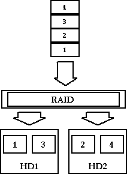
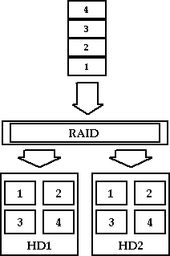
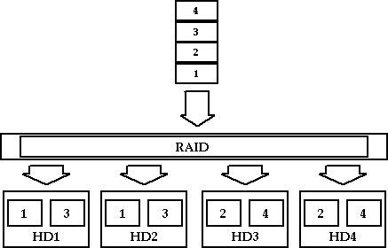
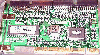
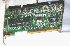
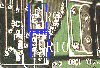

|
|
| 当前位置：电脑报电子版 > 1999 年 > 50 期 > 硬件周刊 > IDE磁盘阵列DIY |
| 《 IDE磁盘阵列DIY 》 |
一、什么是RAID RAID（Redundant Array of Independent Disk，即“独立冗余磁盘阵列”）就是以多个磁盘组成并行工作的磁盘阵列的方式，它可以提高数据存取的速度和安全两方面的能力。根据这个概念，大家很容易就联想到高端应用了吧？事实也是这样的。传统的RAID和专用CPU、大容量的缓存以及SCSI接口的硬盘都是形影不离的，所以要保持超级的性能指标势必使价格高昂。那么我们就注定和RAID无缘了吗？No！这就是我们今天的主角：IDE RAID。这个IDE RAID卡并不依靠什么专用CPU和缓存，而是通过专用的BIOS程序利用CPU的运算来实现RAID的。说白了，就是一块带有软RAID功能的IDE扩展卡，有512字节的FIFO（先进先出）缓存。 RAID可以分为6个级别，即RAID0～RAID5，外加一个派生的RAID1＋0。其中RAID2～RAID5不是淘汰了就是太贵（多用于高端），所以我们只介绍一下IDE RAID可以支持的RAID0、RAID1和RAID1＋0三个级别。 RAID0是一个极端追求性能的方案。它至少基于两块硬盘，在IDE RAID中，它占用CPU时间将数据流分割成大小相同的数据块，然后平均分配给两块硬盘，完成传输。它的操作过程见图1。 可以看出，由于一个传输过程由两个硬盘各完成一半，也就相当于传输带宽增加了一倍，所以操作时间也就减少了一半。但是应该看到，RAID0是舍弃了RAID所强调的安全方面的要求而得到的极限性能。它没有为数据的安全作任何考虑，一旦任何一块硬盘出了意外，就是两块硬盘双双阵亡的局面。因此，单纯的RAID0在高端几乎得不到任何应用。但我们DIYer不同，我们所追求的仅仅是性能而已（有超频为证），不考虑安全性的特点反而帮助我们获得了最强的性能。  RAID0达到了RAID性能方面的极限，而RAID1就是为了达到RAID安全方面的极限而诞生的。在IDE RAID中，它同样是占用了一些CPU时间，但这回是把写往主盘的数据同步地写到镜像盘。它的工作方式如图2所示。 在这种模式下，不论主盘出了什么故障，都可以从镜像盘恢复回来，不过显然这种方式浪费了一半的磁盘空间，而且这种情况下唯一对提升性能有帮助的就是读取时，系统会同时从两个盘上搜索，把先读取到的数据传输回来。 虽然RAID1也可以获得少许的性能提升，但是相对RAID0来说恐怕是微不足道了。因此，在性能和安全兼顾的情况下，就出现了RAID1＋0。如果同时对RAID0中写往两个硬盘的数据再做两个镜像如何呢？这就是RAID1＋0的方案。RAID1＋0至少使用4个硬盘，其工作原理如图3所示。 这样，RAID1＋0在理论上同时保证了RAID0的性能和RAID1的安全性，代价是比RAID0或1再多一倍的硬盘数量。但应该注意，这仅仅是理论上的，因为实际中IDE RAID这样的软件RAID系统会消耗CPU运算时间，RAID1＋0比起RAID0或1来讲，同样多消耗一倍的CPU时间，所以性能最后不一定能提升到RAID0那样的比例，甚至有可能总体性能不升反降。从费用和效率两方面来考虑，RAID1＋0都不值得DIYer列为备选方案。 现在，我们弄清了这几种方式的工作原理和优劣处，就可以得出这个结论了：对于绝大多数DIYer，我们的首选就是两块硬盘组成的RAID0系统。 二、IDE RAID产品 FastTrak：Promise公司出品，配有两个UltraDMA33的IDE通道，支持RAID0、RAID1、RAID1＋0，国内有售，大约800元。 FastTrak66：同样是Promise公司的产品（如图4），配有两个UltraDMA66的IDE通道，支持RAID0、RAID1、RAID1＋0、国内有售，大约1300元。 SIDEPro66：Iwill公司出品，配有两个UltraDMA66通道，RAID支持和热插拔支持是可选项（增强版），国内有售，价格不详。 UltimaPlus33：韩国Alalion公司出品，配有两个UltraDMA33通道，支持RAID0、RAID1、RAID1＋0，但国内暂时没有这种产品。 FT440BX主板：Promise公司出品的集成IDE RAID功能的主板，使用Intel BX芯片组的主板，但国内暂时没有这种产品。 三、IDE RAID改造方法  由于昆腾和Intel的力推，给UltraDMA66扩充卡留下了市场空间，许多厂商推出了自己的产品。Promise公司的Ultra66（以下简称U66）就是使用自己的芯片制作的UltraDMA66卡，如图5。不知大家注意了没有，这块卡与FastTrak66（以下简称FT66）不但使用同一块控制芯片，而且连布线都是一样的——除了BIOS和板子上的印刷标识。也就是说，这两块卡很可能是同一条生产线上生产出来的——因为从成本上讲，Promise公司不会用两条生产线来生产几乎一样的卡的。 那么是不是只要将U66的BIOS刷新成FT66的就可以把U66变成FT66呢？答案是否定的。他们还是在两块卡上作了一些手脚，使之不能简单地通过刷新BIOS的方式把U66变成FT66。那不同点究竟在哪呢？我们经过不懈努力，查找了N个网站，终于找到了它们之间的区别！ FastTrak66与Ultra66的不同点：FT66的R10位置是空的，R9是焊上电阻的，而U66恰好相反。 下面我们就为大家介绍如何改装！这块U66是从沈阳三好街花了180大元买来的，连包装合都没有，估计是水货。大家在购买的时候可以对照一下，正品应该是300元内才能拿下。 1.准备工作 需要的工具很简单，一个30W左右的细头电烙铁（头越细越好），一个用来抽出融化的焊锡的锡抽，一些焊锡。 2.改造 首先到Promise的网站（http://www.promise.com）下载一个FT66的BIOS和FT66的驱动程序，最好连那个Windows GUI的RAID管理程序一起下载回来。把ZIP包解开，放到一个方便的目录里，然后重新启动，进入纯DOS模式，最好不要加载任何程序，然后运行，根据提示输入解压缩出来的BIOS镜像的路径，更新程序就会将文件写入BIOS，写的过程大概只有20左右秒。然后关机，把卡拔出来，下面我们就给它动手术。 出于方便考虑，最好将卡的金属挡片拆下来，然后把卡翻过来，你就会看到两排整齐的BIOS芯片引脚（图7），加热电烙铁，待温度足够高的时候（可将焊锡融化的温度），将电烙铁头贴在BIOS芯片的一个引脚上，等到引脚上的焊锡融化后（不要将电烙铁移开），用另一只手将锡抽嘴对准融化的焊锡，抽出焊锡。用同样的方法对付其它31根引脚，这样，BIOS芯片就被焊下来了。 现在Promise的秘密终于露出来了，原来R9和R10这两个电阻在BIOS芯片底下……FT66的R9有电阻，而R10没有，U66的R9没有电阻，而R10有。现在的工作就是把R10的电阻焊下来，再焊到R9上去，然后把BIOS芯片再焊回去（注意别焊反了）。 好了，大功告成。我们把这块既不是U66也不是FT66的东西叫什么呢？ 四、安装设置 首先，把两只硬盘都连接到我们这块“FastTrak66”上。不过千万不要把两只硬盘以主从方式连接到一条盘线上，无论你的硬盘线如何短缺，都应该让两块硬盘都作为Master连接到FT66的两条IDE通道上。因为在IDE总线工作时，总是先响应Master设备的数据请求，换句话说，当Master设备工作时，Slave设备只能处于等待状态，也就无从谈起RAID0利用两个硬盘并行工作来提升性能的特性了。限于篇幅，我们就不再讲详细的硬件安装过程了，下面我们介绍一下软件上的安装设置。 按下Power开机，当通过主板BIOS后，出现如图8所示的提示时，“按Ctrl＋F”。 然后会出现设置画面，共有六个选项，分别对应自动设置、查看设备关联、定义阵列、删除阵列、重建阵列和控制器设置这六项功能。我们现在应该选择“3”（直接按数字键“3”即可）“定义阵列”，在第一行上敲回车，就进入了阵列一（Array 1）的设置。可用硬盘会列在下面框里，要用哪个硬盘就把它的Assignment设置成Y。如果用RAID0的话，就把RAIDMode设置成Stripe（区带集）；如果是1或1＋0的话，就设置成Mirror或Span。然后设置一下RAID0方式下分割的数据块大小（RAID1和RAID1＋0没有此项设置）。最后别忘了按“Ctrl＋Y”保存设置。 好啦，我们的RAID0已经设置好了，接下来就是像普通硬盘一样的分区、格式化了。但如果希望使用RAID0的硬盘启动的话，需要在BIOS里面设置成从SCSI启动。很奇怪是么？因为FastTrak66卡把做过RAID0的硬盘映射成了一个SCSI设备，这样就不能设置成从C启动了，但除了主板BIOS之外，其它的程序还是会把它当作一块普通硬盘的，所以不用担心兼容性的问题。 Promise还做了一个运行在Windows下的设置、监控程序。这个程序使用起来非常简单，所以就不详细说了。只是要注意一下，一般情况下，在设置程序中选择“为商业/游戏优化（Bussiness and games）”会得到较高的性能——除非你经常编辑视频/音频文件。 五、效果测试 RAID0的性能究竟是否像传说中的那么厉害呢？我们下面就用我们改造的“FastTrak66”来测试一下吧。测试平台配置如下：Celeron300A超到504MHz，KingMax PC100 64MB×2，Creative 3D Blaster Savage4 Pro（32M），Iwill DBD100主板。我们使用了两只IBM 10.1G硬盘，组成一个RAID0系统。这块硬盘的技术指标如下：5400转，512K缓存，3.2G单碟，DMA33接口，内部最大传输率161.9Mb/s，9.5ms平均寻道时间（以下简称这块硬盘为IBM5400）。与之对比的是新买的IBM 9.1G 7200转硬盘，技术指标如下：7200转，2M缓存，4.5G单碟，DMA66接口，最大内部传输率223.2Mb/s，9.0ms平均寻道时间（以下简称这块硬盘为IBM7200）。 为了对比提高的效率，我们还测试了单块IBM5400的性能。 我们测试了英文版Windows98下的性能，测试软件选用了4种，分别是ZDNet的权威评测软件WinBench99 1.1、非常流行的测试新秀Sisoft的Sarana99、《Windows》杂志出品的评测软件WinTune98、Norton SystemWorks2000工具箱里的Notron System Information 4.5。从我们得到的测试结果可以看出，IBM5400 RAID0在传输率上以绝对优势大比分胜出，几乎是IBM7200传输率的2倍，在High－End Diskmark上也小胜IBM7200。对比单个的IBM5400，在WinBench和Sarana中几乎所有得分均大幅度胜出，可见RAID0的威力的确不小。不过在对传输率不太敏感的WinTune和Norton SI中，性能却不相上下。也许是这些测试软件的加权值侧重不同吧。我们为了考察实际使用时的性能，特意做了其它几个测试，比如启动Win98、拷贝大量文件和读取巨型文件。虽然没有记录准确数据，但能明显感觉到，IBM5400 RAID0要比IBM7200快些，而IBM5400总是让我们等得心烦。基本上，进行这些操作的时候，IBM5400 RAID0至少要比IBM5400快50％～70％。 值得一提的是IBM5400 RAID0的CPU占用率为4.29％，相当于两块IBM5400的CPU占用率之和再加上CPU分配数据所耗费的时间。但这只是两块硬盘的情况，如果是四块硬盘的话，恐怕会达到10％以上。这样的系统开销，大概会导致整体性能下降，得不偿失了吧？所以，两块硬盘组成的RAID0就是性能最高的方案啦。 那么，RAID一定要用两个一样的硬盘来组建吗？大概许多手里有两块不同硬盘的老玩家都有这样的疑问。从理论上讲，当两个硬盘不一样的时候，要根据不同容量向两个硬盘分配不同大小的数据，且不说这个分配程序将会如何复杂，即使真的实现了，这个系统开销，在IDE这种软RAID中，CPU受得了吗？不论如何，我们本着DIY精神做了一次尝试。我们用一只IBM5400和一只Quantum FireBall EL 5.1G（以下简称FBEL）做了一个RAID0系统。没想到我们居然成功了！原来Promise用了一种比较取巧的方法，即当用两块不同容量的硬盘组成RAID0时，整个可用容量就被限定为较小的那块硬盘容量的二倍，较大容量那块的剩余空间就被闲置起来了（小舞：难道酷鱼20G加Maxtor 540M组成的RAID0只有1080M可用？口吐白沫，不省人事）。 好啦，废话少说，我们先来看看这个不同硬盘组成的RAID0系统（以下简称IBMFB）的性能如何。测试结果表明，这种方式下，其性能也不可小视。同样在WinBench和Sarana中，IBMFB所有的得分都远远地把IBM5400和FBEL的单独得分甩在后面，传输率一项上几乎就是两块硬盘传输率的和。不过，此时CPU占用率达到了6.49％，比IBM5400和FBEL的CPU占用率之和还大一倍。大概是因为使用不同的硬盘，各自的指标不相同，所以CPU在处理数据的时候耗费了更多的时间吧？ 所以，我们建议大家在组建RAID的时候，最好弄两块同一品牌，同一型号的硬盘，这样既可以充分利用硬盘空间，又可以相对地降低CPU占用率。 怎么样？对RAID0的性能动心了吗？赶快动手DIY吧！ （编注：市面上正在销售的U66还有另一种版本，比本文改造的这块卡少了一个晶振。这种版本的U66卡能否按此方法改造尚未验证，所以请大家尽量找带晶振的版本） (小舞 雨冰) |
| 下载本期推荐软件 | 页 首 |
| CPCW网站版权所有，电脑报网站编辑部设计制作发布 |